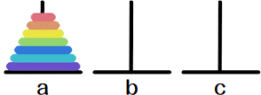
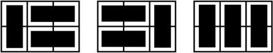
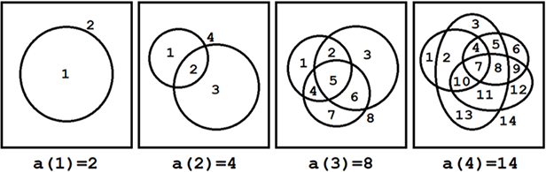

基础 DP
 Jan 16, 2021
Jan 16, 2021
 Menu
Menu
斐波那契数列 ¶
斐波那契数列是形如 $\{1,1,2,3,5,8,\cdots\}$ 的数列. 求数列的第 $n$ 项.
 分析
分析
$f[n]$：数列的第 $n$ 项.
f[n]=
\begin{cases}
1&n=1,2\\
f[n-1]+f[n-2]&n\geq 3
\end{cases}
int f[];
f[1] = f[2] = 1;
for (int i = 3; i <= n; i ++)
f[i] = f[i - 1] + f[i - 2];
汉诺塔问题 ¶
汉诺塔由 $n$ 个不同的盘子和 $3$ 根杆子组成. 初始时，$n$ 个盘子从小到大叠在 $a$ 杆上：

现在，按以下规则将 $n$ 个盘子从 $a$ 杆移到 $c$ 杆.
- 一次只能动一个盘子.
- 盘子只能放在杆上.
- 大盘子不能叠在小盘子上.
求移动盘子的最少次数.
分析
$f[n]$：将 $n$ 个盘子从一杆移至另一杆，所需的最少移动次数.
将 $n$ 个盘子从 $a$ 杆移到 $c$ 杆，需要以下 $3$ 步：
- 将 $a$ 杆的 $n-1$ 个盘子移至 $b$ 杆（共 $f[n-1]$ 次）.
- 将 $a$ 杆的最后一个盘子移至 $c$ 杆（共 $1$ 次）.
- 将 $b$ 杆的 $n-1$ 个盘子移至 $c$ 杆（共 $f[n-1]$ 次）.
f[n]=
\begin{cases}
1&n=1\\
2\cdot f[n-1]+1&n\geq 2
\end{cases}
int f[]; f[1] = 1;
for(int i = 2; i <= n; i ++)
f[i] = 2 * f[i - 1] + 1;
骨牌问题 ¶
用若干 $1×2$ 的骨牌铺满 $2×n$ 的方格. 如图为 $n=3$ 时的所有铺法：

求任意 $n$ 对应的方法总数.
分析
$f[n]$：$n$ 对应的方法总数.
- 若第一个骨牌竖放在左边，则剩余 $2×(n-1)$ 个空方格，铺法数为 $f[n-1]$.
- 若第一个骨牌横放在左上角，为了不留空，第二个骨牌必须横放在其正下方. 剩余 $2×(n-2)$ 个空方格，铺法数为 $f[n-2]$.
f[n]=
\begin{cases}
1&n=1\\
2&n=2\\
f[n-1]+f[n-2]&n\geq 3
\end{cases}
状态转移方程几乎和 斐波那契数列 一致.
平面分割问题 ¶
平面上有 $n$ 条闭曲线，每 $2$ 条恰好交于 $2$ 点，且每 $3$ 条不交于同一点. 求平面被分割成的区域个数.
分析
$a[n]$：$n$ 条封闭曲线分割成的区域个数.

由上图可得：
a[1]=2\\
a[2]-a[1]=2\\
a[3]-a[2]=4\\
a[4]-a[3]=6\\
即
a[n]=\begin{cases}
2&n=1\\
a[n-1]+2(n-1)&n≥2
\end{cases}
正确性证明：
新增一条曲线时，每与一条已有曲线相交一次，就增加一个区域. 而新增的第 $n$ 条曲线与已有的 $n-1$ 条曲线各有 $2$ 个交点
$∴$ 新增区域数 $=$ 新增交点数 $=2\cdot (n-1)$.
$∴$ 现有区域个数 $a[n]=$ 原有区域个数 $+$ 新增区域个数 $=a[n-1]+2(n-1)$.
int a[]; a[1] = 2;
for(int i = 2; i <= n; i ++)
a[i] = a[i - 1] + 2 * (n - 1);
最长上升子序列 (LIS) ¶
求序列 $A$（长度 $n$）的最长上升子序列 $\text{LIS}(A)$ 的长度.
例：$A=\{2,3,6,4,5,1\}$, $\text{LIS}(A)=\{2,3,4,5\}$（长度 $4$）.
分析
$f[i]$：$\text{LIS}(A_{1\cdots i})$ 的长度.
枚举 $j=1\cdots i-1$：
- 若 $A_j<A_i$，则 $A_i$ 可以接在 $\text{LIS}(A_{1\cdots j})$ 后面，形成的上升子序列长度为 $f[j]+1$.
- 若 $A_j≥A_i$，$A_j$ 对 $f[i]$ 没有贡献，直接跳过.
$$f[i]=\max_{j<i, \ A_j<A_i}(f[j]+1)$$
for (int i = 1; i <= n; i ++) {
f[i] = 1;
for (int j = 1; j < i; j ++)
if (a[j] < a[i])
f[i] = max(f[i], f[j] + 1);
}
// 问题的解是 f[n]
单调栈优化
扫描每一个数，将其加入单调栈.
假设当前单调栈内有 $\{2,3,6\}$，而扫描到 $4$. 根据贪心原理，将 $6$ 替换为 $4$ 必定更优.
当扫描到 $a[i]$：
- 若 $a[i]$ 大于栈尾，则直接将其入栈.
- 否则在栈中二分查找第一个 $\geq a[i]$ 的数，将其替换为 $a[i]$.
最终栈的长度即为 LIS 的长度. 时间复杂度为 $O(n\log{n})$.
vector<int> s;
s.push_back(a[1]);
for (int i = 2; i <= n; i ++) {
if(a[i] > s.back())
s.push_back(a[i]);
else
s[*lower_bound(s.begin(), s.end(), a[i])] = a[i];
}
最长公共子序列 (LCS) ¶
求序列 $A$（长度 $n$）和序列 $b$（长度 $m$）的最长公共子序列 $\text{LCS}(A,B)$ 的长度.
例：$A=$ freeze, $B=$ refeze, $\text{LCS}(A,B)=$ reeze（长度 $5$）.
分析
$f[i,j]$：$\text{LCS}(A_{1\cdots i},B_{1\cdots j})$ 的长度.
枚举 $i=1\cdots n$： 枚举 $j=1\cdots m$：
- 若 $A_i≠B_j$，继承最优子状态：$f[i,j]=\max(f[i-1,j],f[i,j-1])$.
- 若 $A_i=B_j$，则 $A_i$（或 $B_j$）可以接在 $\text{LCS}(A_{1\cdots i-1},B_{1\cdots j-1})$ 之后，形成的公共序列长度为 $f[i-1,j-1]+1$.
f[i,j]=\max\left\{\begin{aligned}
&f[i-1,j]\\
&f[i,j-1]\\
&f[i-1,j-1]+1,A_i=B_j
\end{aligned}\right.
for (int i = 1; i <= n; i ++) {
for (int j = 1; j <= m; j ++) {
f[i][j] = max(f[i - 1][j], f[i][j - 1]);
if (a[i] == b[j])
f[i][j] = max(f[i][j], f[i - 1][j - 1] + 1);
}
}
数字金字塔 ¶
三角矩阵 $A$ 有 $n$ 行，第 $i$ 行有 $i$ 列. 从第一行第一列出发，每次可以移动到下一行相邻的两个数字. 到达底部时，经过的数字之和最大为多少？
此例中，最优路径为 $13→8→26→15$，最大值为 $62$.
分析
$(i,j)$：第 $i$ 行第 $j$ 列的数字.
$f[i,j]$：走到 $(i,j)$ 时，经过的数字之和的最大值.
逆推法：要走到 $(i,j)$，则上一步只能在 $(i-1,j-1)$ 或 $(i-1,j)$.
f[i,j]=(i,j)+\max\left\{\begin{aligned}
&f[i-1,j-1]\\
&f[i-1,j]
\end{aligned}\right.
注意：当 $j=1$ 或 $j=i$ 时，$f[i-1,j-1]$ 和 $f[i-1,j]$ 会越界. 故 $f$ 数组须初始化为 $-∞$，以使越界的元素在 $\max$ 操作中被自动淘汰.
memset(f, 0x80, sizeof f);
f[1][1] = 1;
for (int i = 2; i <= n; i ++) {
for (int j = 1; j <= i; j ++) {
cin >> f[i][j];
f[i][j] += max(f[i - 1][j - 1], f[i - 1][j]);
}
}
for (int i = 1; i <= n; i ++)
ans = max(ans, f[n][i]);
数字矩阵 ¶
有 $n$ 行 $m$ 列的数字矩阵 $A$. 从左上角出发，每次只能向下或向右走一步. 到右下角时，经过的数字之和最大为多少？

此例中，最优路径为 $17→1→20→12→9→2$，最大值为 $61$.
分析
$(i,j)$：第 $i$ 行第 $j$ 列的数字.
$f[i,j]$：走到 $(i,j)$ 时，经过的数字之和的最大值.
逆推法：由于只能向左走或向下走，要走到 $(i,j)$，上一步只能在 $(i-1,j)$ 或 $(i,j-1)$.
f[i,j]=(i,j)+\max\left\{\begin{aligned}
&f[i-1,j]\\
&f[i,j-1]
\end{aligned}\right.
注意：当 $i=1$ 或 $j=1$ 时，$f[i-1,j]$ 和 $f[i,j-1]$ 会越界. $f$ 数组须初始化为 $-∞$.
memset(f, 0x80, sizeof f);
for (int i = 1; i <= n; i ++) {
for (int j = 1; j <= m; j ++) {
cin >> f[i][j];
if (!(i == 1 && j == 1))
f[i][j] += max(f[i-1][j], f[i][j - 1]);
}
}
前缀和 ¶
前缀和是一种重要的预处理技巧，能大幅降低查询区间元素和的时间复杂度.
预处理 ¶
数列 $A$ 有 $n$ 个元素.
$f[i]$: $A_1$ 到 $A_i$ 的和.
$$f[i]=f[i-1]+A_i$$
时间复杂度：$O(n)$.
for (int i = 1; i <= n; i ++)
f[i] = f[i - 1] + a[i];
查询 ¶
$g[i,j]$：$A_i$ 到 $A_j$ 的和.
$$g[i,j]=f[j]-f[i-1]$$
单次查询的时间复杂度：$O(1)$.
int g(int i, int j) { // sum of a[i ... j]
return f[j] - f[i - 1];
}
二维前缀和 ¶
预处理 ¶
矩阵 $A$ 有 $n$ 行 $m$ 列.
$f[i,j]$：以 $(1,1)$ 为左上角，以 $(i, j)$ 为右下角的矩阵的元素和.
$$f[i,j]=f[i-1,j]+f[i,j-1]-f[i-1,j-1]+(i,j)$$

时间复杂度：$O(nm)$.
f[0][0] = 0;
for (int i = 1; i <= n; i ++)
for (int j = 1; j <= m; j ++)
f[i][j] = f[i - 1][j] + f[i][j - 1] - f[i - 1][j - 1] + a[i][j];
查询 ¶
$g[x_1,y_1,x_2,y_2]$：以 $(x_1,y_1)$ 为左上角，以 $(x_2, y_2)$ 为右下角的矩阵的元素和.
$$g[x_1,y_1,x_2,y_2]=f[x_2,y_2]-f[x_1-1,y_2]-f[x_2,y_1-1]+f[x_1-1,y_1-1]$$

单次查询的时间复杂度：$O(1)$.
int g(int x1, int y1, int x2, int y2) {
return f[x2][y2] - f[x1 - 1][y2] - f[x2][y1 - 1] + f[x1 - 1][y1 - 1];
}
差分 ¶
差分是前缀和的逆运算，能大幅降低区间修改的时间复杂度.
预处理 ¶
数列 $A$ 有 $n$ 个元素.
令 $f[i]=A_i-A_{i-1}$. $f$ 为差分数列.
时间复杂度：$O(n)$.
for (int i = 1; i <= n; i ++)
f[i] = a[i] - a[i - 1];
区间修改 ¶
当给 $A_l\cdots A_r$ 统一加上 $x$ 时，$f[l]$ 增加了 $x$，$f[r+1]$ 减少了 $x$, $f$ 数列中其余元素不变.
因此可以每次只修改 $f[l]$ 和 $f[r+1]$，最后通过 $f$ 数列还原出 $A$.
单次修改的时间复杂度：$O(1)$.
void add(int l, int r, int x) { // add x to A[l ... r]
f[l] += x, f[r + 1] -= x;
}
void restore() {
for(int i = 1; i <= n; i ++)
a[i] = a[i - 1] + f[i];
}